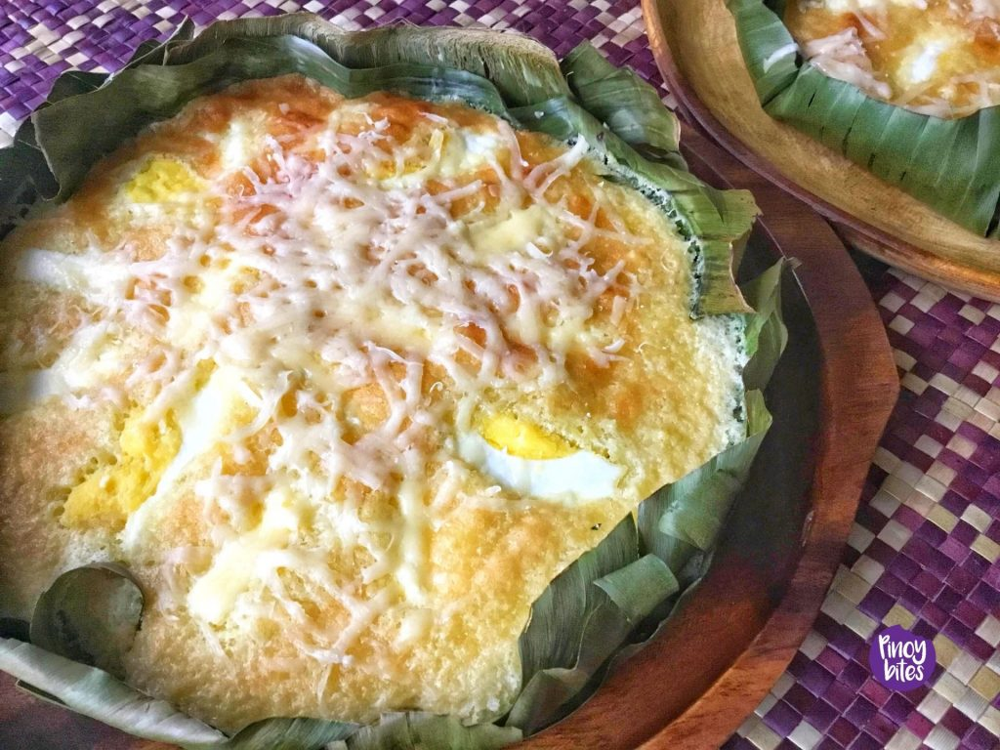
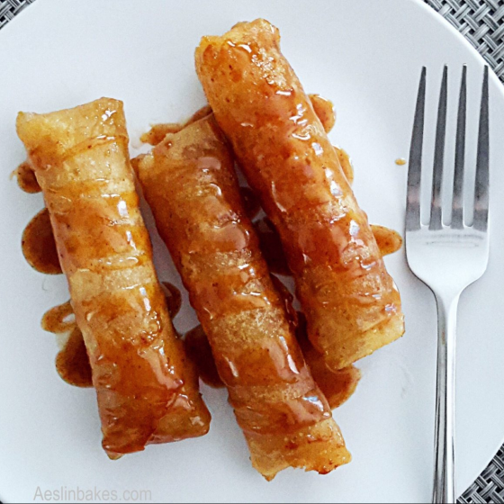

Sweet indulgences to complete your meal on a high note. From classic treats to
innovative confections, our desserts are the perfect way to end a dining experience.
TOP RATED

Bibingka
Soft, fluffy Filipino rice cake traditionally baked in clay pots, topped with
salted egg and grated coconut.
By Vanjo Merano
Ingredients
1 cup rice flour
1/8 teaspoon salt
2 1/2 teaspoon baking powder
3 tablespoons butter
1/2 cup granulated sugar
1 cup coconut milk
1/4 cup fresh milk
1 piece salted duck egg sliced
1/2 cup grated cheese
3 pieces raw eggs
1/4 cup grated coconut
Pre-cut banana leaf
Instructions
Preheat oven to 375°F.
Mix rice flour, baking powder, and salt; set aside.
Cream butter, gradually add sugar, and whisk. Add eggs and mix well.
Slowly incorporate the dry mixture, then whisk in coconut milk and fresh milk.
Line a baking pan with banana leaf, pour in the batter, and bake for 15 minutes.
Top with salted egg and grated cheese, then bake for another 15–20 minutes until golden brown.
Cool, brush with butter, top with grated coconut, and serve.
How to Cook Delicious Bibingka
Halo Halo
Halo-Halo is a popular Filipino dessert made with mixed sweet ingredients, crushed ice, milk,
and topped with ice cream or leche flan.
By Lalaine Manalo
Ingredients
½ cup gulaman cubes or sago
½ cup sweetened beans (garbanzo, red mung, and/or white beans)
½ cup Nata de coco, drained well
½ cup Kaong, drained well
½ cup sweetened saba bananas
½ cup sweetened jackfruit strips
¼ cup sweetened macapuno
½ cup ube halaya
shaved ice
1 cup evaporated milk
1 cup leche flan
4 scoops ice cream (mango, ube, or vanilla)
Instructions
Prepare the gulaman according to package directions. Use less water than called for to yield a firmer texture.
Prepare the ingredients from scratch or use bottled halo-halo ingredients.
In a tall glass, add about a teaspoon each of desired add-ins to about ⅓ full.
Pack the glass with shaved ice.
Drizzle evaporated milk over the ice.
Top the ice with leche flan and scoop of ice cream.
Garnish with strips of macapuno and sprinkle with pinipig, if desired.
Serve immediately.
How to make Delicious Halo Halo

Turon
A Filipino snack made by wrapping slices of banana and jackfruit
in spring roll wrappers.
By Vanjo Merano
Ingredients
6 pieces bananas saba or plantains, cut in half (lengthwise)
1 cup jackfruit ripe, sliced
1 1/2 cup sugar
12 pieces lumpia wrapper
2 cups cooking oil
Instructions
Roll the banana on the sugar plate and ensure that the banana is coated with enough sugar
Place the banana with sugar coating on the lumpia wrapper. Add a slice of ripe jackfruit on top.
Fold and lock the spring roll wrapper, use water to seal the edge
In a pan, heat the oil and put-in some sugar.Wait until the brown sugar floats
Put-in the wrapped banana and fry until the wrapper turns golden brown and the extra sugar sticks on wrapper
Serve hot as a dessert or snack. Share and Enjoy!
How to Cook Delicious Turon
Leche Flan
Creamy Filipino custard dessert made with caramelized sugar, egg yolks,
and sweetened condensed milk.
By Vanjo Merano
Ingredients
10 pieces eggs
1 can condensed milk (14 oz)
1 cup fresh milk or evaporated milk
1 cup granulated sugar
1 teaspoon vanilla extract
Instructions
Using all the eggs, separate the yolk from the egg white (only egg yolks will be used).
Place the egg yolks in a big bowl then beat them using a fork or an egg beater
Add the condensed milk and mix thoroughly
Pour-in the fresh milk and Vanilla. Mix well
Put the mold (llanera) on top of the stove and heat using low fire
Put-in the granulated sugar on the mold and mix thoroughly until the solid sugar turns into liquid
(caramel) having a light brown color.
Spread the caramel (liquid sugar) evenly on the flat side of the mold
Wait for 5 minutes then pour the egg yolk and milk mixture on the mold
Cover the top of the mold using an Aluminum foil
Steam the mold with egg and milk mixture for 30 to 35 minutes.
After steaming, let the temperature cool down then refrigerate